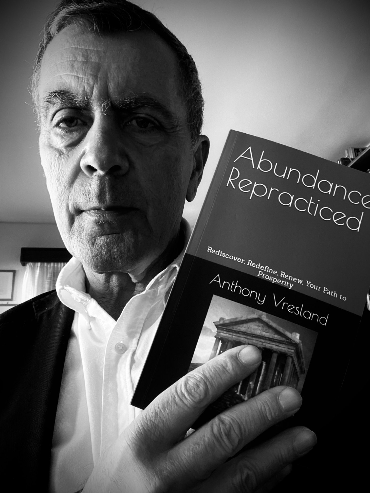

Anthony Vresland
Author · Philosopher · Architect
⚡ Athens, Greece

The Man
Architect of Space.
Philosopher of the Soul.
Anthony Vresland was trained as an architect and in the Fine Arts in New York — disciplines that taught him to read structure beneath surface, to find the hidden geometry that makes a thing stand. It is precisely this eye that he brought to the ancient texts: not the eye of a literary scholar, but the eye of a builder who recognises a blueprint.
Now living in Athens, Greece — where the stones themselves remember Plato, Socrates, and the great initiates of the Western tradition — he writes in the shadow of the Acropolis, surrounded by the living ruins of the civilisation whose esoteric inheritance he decodes.
The Work
Decoding the Hidden Architecture of Myth.
Homer, Plato, and the great philosophers of antiquity were not entertainers. They were initiates, transmitting a precise science of consciousness through allegory, number, and symbol — using myth as a vessel that could carry esoteric knowledge across centuries without being destroyed by it.
Vresland's work is the decoding of that transmission. Layer by layer — from the literal narrative down through the Hermetic, Kabbalistic, Orphic, and Pythagorean structures beneath — he reveals what the ancients actually meant: the soul's civil war, the charioteer and the two horses, the man who escapes the cave and returns to free the others.
These are not metaphors. They are maps. And fourteen books into the project, the map is still being drawn.
The Range
Fourteen Books. One Unified Vision.